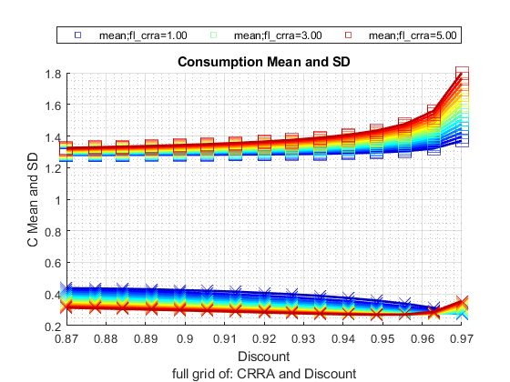
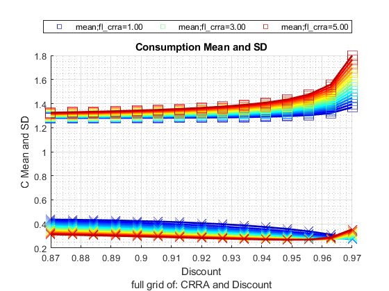

Analyze Distributional Results
back to Fan's Dynamic Assets Repository Table of Content.
Contents
- FF_AZ_TEST_ANALYZE post solution simulation
- If Funcion Default Invoke
- Default Parameter
- Array Parameters
- Default
- Parse Parameters 1
- Parse Parameters 2
- Cross-Simulate Model Along Parameters
- Show Stats Only
- Specify Outcome Variables to Plot
- List graphing options for az and abz models, some also for akz models
- list Means
- list graphing options only for akz models
- Inequality Measures, Consumption Shares
- Store to cells
- Get Var Descs
- Graph Outcomes
- Loop over Subplots (different sets of Outcomes)
- Color Options
- Graph
- Graph By Cross of Full
- Graph By N Parameters, Full Grid
function [tb_outcomes, support_map] = ff_az_test_analyze(varargin)
FF_AZ_TEST_ANALYZE post solution simulation
Simulate the model along various dimensions, and produce graphical outputs to show aggregate/distributional statistics.
@ar_it_plot_sets array integer array of which statistics graphs to generate, see line 128. Could add additional statistics to that conditional list.
@param st_simu_type string cross vs gridd simulation. cross: with (x,y), vary X fixing y, vary Y fixing x. grid: all (x,y) \in (X,Y)
- st_simu_type = 'c' for cross simulate, if 'c', then each array value of param_tstar_map container is simulated over one by one. So if there are two arrays associated with two keys in param_tstar_map with length N1 and N2, the total number of simulations equals to N1 + N2.
- st_simu_type = 'g' for grid simulate, if 'g', then all possible combinations of the arrays in param_tstar_map are used to create combinations of parameter values. So if there are two arrays with lengths N1 and N2, there will be N1*N2 number of simulations
- st_simu_type = 'r' for random simulate, if 'r', then should specify param_map('it_st_simu_type_g_seed') value. Only the minimum and the maximum values for each array in param_tstar_map matters. Based on these minimum and maximum, and also what is in param_map('it_st_simu_type_g_simun'). Random parameter values will be drawn.
@param it_size_type integer:
- it_size_type = 1 is quick grid
- it_size_type = 2 is standard grid
- it_size_type = 3 is denser grid
@param cl_st_param_keys cell string cell array container parameters that we are simulating over
@param param_map container parameter container
@param support_map container support container
@param param_tstar_map container map of arrays with keys that are parameter keys. This could be specified outside with array values to override defaults here.
@param param_desc_map container map of strings for each parameter key.
@param tb_outcomes table table of simulation outcomes for various statistics for each set of parameters. Columns are statistics, rows are outcome variables, groups of rows are different simulations.
@include
@seealso
- SPEED savings only overall benchmark speed testing: fsi_az_ds_vecsv_speed
- PREFERENCE savings only preference testing: fsi_az_ds_vecsv_pref
- PREFERENCE savings only preference testing cross: fsi_az_ds_vecsv_pref_cross
- SHOCK savings only shock testing: fsi_az_ds_vecsv_shock
- SHOCK savings only shock testing cross: fsi_az_ds_vecsv_shock_cross
- PRICE savings only wage and interest rate testing cross: adjust wage and savings rate fsi_az_ds_vecsv_price_cross
If Funcion Default Invoke
if (isempty(varargin)) close all; end
Default Parameter
it_param_set = 9; [param_map, support_map] = ffs_az_set_default_param(it_param_set); support_map('bl_replacefile') = false; support_map('bl_graph_onebyones') = true; support_map('bl_display_graph_stats') = true;
Array Parameters
initiate empty map
st_simu_type = 'g'; it_size_type = 2; cl_st_param_keys = {'fl_crra', 'fl_beta'}; if (strcmp(st_simu_type, 'c')) ar_it_plot_sets = [1,2,4,5,6,7]; it_simu_vec_len = 10; param_tstar_map = containers.Map('KeyType','char', 'ValueType','any'); param_tstar_map('fl_crra') = linspace(1, 5, it_simu_vec_len); param_tstar_map('fl_beta') = linspace(0.87, 0.97, it_simu_vec_len); end if (strcmp(st_simu_type, 'g')) ar_it_plot_sets = [3,5,51]; % assume always plot the first parameter listed under cl_st_param_keys as x-axis variable param_tstar_map = containers.Map('KeyType','char', 'ValueType','any'); param_tstar_map('fl_crra') = linspace(1, 5, 15); param_tstar_map('fl_beta') = linspace(0.87, 0.97, 15); end param_desc_map = containers.Map('KeyType','char', 'ValueType','any'); param_desc_map('fl_crra') = {'CRRA'}; param_desc_map('fl_beta') = {'Discount'}; it_grid_var_color_n = 3;
Default
default_params = {ar_it_plot_sets ...
st_simu_type it_size_type cl_st_param_keys ...
param_map support_map param_tstar_map param_desc_map it_grid_var_color_n};
Parse Parameters 1
override default set above if any parameters are updated
params_len = length(varargin);
[default_params{1:params_len}] = varargin{:};
ar_it_plot_sets = default_params{1};
st_simu_type = default_params{2};
it_size_type = default_params{3};
cl_st_param_keys = default_params{4};
param_map = [param_map; default_params{5}];
support_map = [support_map; default_params{6}];
param_tstar_map = [param_tstar_map; default_params{7}];
param_desc_map = [param_desc_map; default_params{8}];
% if grid simulation, how many colors groups to include?
it_grid_var_color_n = default_params{9};
Parse Parameters 2
params_group = values(param_map, {'st_model'});
[st_model] = params_group{:};
params_group = values(support_map, {'bl_graph_onebyones', 'bl_display_graph_stats'});
[bl_graph_onebyones, bl_display_graph_stats] = params_group{:};
Cross-Simulate Model Along Parameters
[tb_outcomes, support_map, param_desc_map] = ff_az_test_gen( ... st_simu_type, it_size_type, cl_st_param_keys, ... param_map, support_map, param_tstar_map, param_desc_map);
----------------------------------------
----------------------------------------
xxxxxxxxxxxxxxxxxxxxxxxxxxxxxxxxxxxxxxxx
xxxxxxxxxxxxxxxxxxxxxxxxxxxxxxxxxxxxxxxx
Begin: Show all key and value pairs from container
CONTAINER NAME: SUPPORT_MAP
----------------------------------------
Map with properties:
Count: 48
KeyType: char
ValueType: any
xxxxxxxxxxxxxxxxxxxxxxxxxxxxxxxxxxxxxxxx
xxxxxxxxxxxxxxxxxxxxxxxxxxxxxxxxxxxxxxxx
----------------------------------------
----------------------------------------
pos = 1 ; key = bl_display ; val = false
pos = 2 ; key = bl_display_defparam ; val = false
pos = 3 ; key = bl_display_dist ; val = false
pos = 4 ; key = bl_display_final ; val = false
pos = 5 ; key = bl_display_final_dist ; val = true
pos = 6 ; key = bl_display_final_dist_detail ; val = false
pos = 7 ; key = bl_display_funcgrids ; val = false
pos = 8 ; key = bl_display_graph_stats ; val = true
pos = 9 ; key = bl_display_simu_stats ; val = true
pos = 10 ; key = bl_graph ; val = true
pos = 11 ; key = bl_graph_coh_t_coh ; val = false
pos = 12 ; key = bl_graph_funcgrids ; val = false
pos = 13 ; key = bl_graph_onebyones ; val = true
pos = 14 ; key = bl_graph_pol_lvl ; val = false
pos = 15 ; key = bl_graph_pol_pct ; val = false
pos = 16 ; key = bl_graph_val ; val = false
pos = 17 ; key = bl_img_save ; val = false
pos = 18 ; key = bl_mat ; val = false
pos = 19 ; key = bl_mat_test ; val = true
pos = 20 ; key = bl_post ; val = true
pos = 21 ; key = bl_profile ; val = false
pos = 22 ; key = bl_profile_dist ; val = false
pos = 23 ; key = bl_replacefile ; val = false
pos = 24 ; key = bl_time ; val = false
pos = 25 ; key = bl_timer ; val = true
pos = 26 ; key = it_display_every ; val = 20
pos = 27 ; key = it_display_final_colmax ; val = 12
pos = 28 ; key = it_display_final_rowmax ; val = 100
pos = 29 ; key = it_display_summmat_colmax ; val = 5
pos = 30 ; key = it_display_summmat_rowmax ; val = 5
pos = 31 ; key = st_img_name_main ; val = _default
pos = 32 ; key = st_img_path ; val = C:/Users/fan/CodeDynaAsset//m_az//solve/img/
pos = 33 ; key = st_img_prefix ; val =
pos = 34 ; key = st_img_suffix ; val = _p9.png
pos = 35 ; key = st_mat_name_main ; val = _default
pos = 36 ; key = st_mat_path ; val = C:/Users/fan/CodeDynaAsset//m_az//solve/mat/
pos = 37 ; key = st_mat_prefix ; val =
pos = 38 ; key = st_mat_suffix ; val = _p9
pos = 39 ; key = st_mat_test_name_main ; val = r
pos = 40 ; key = st_mat_test_path ; val = C:/Users/fan/CodeDynaAsset//m_az//test/ff_az_ds_vecsv/mat/
pos = 41 ; key = st_mat_test_prefix ; val =
pos = 42 ; key = st_mat_test_suffix ; val = _g12_cg_t2l30
pos = 43 ; key = st_matimg_path_root ; val = C:/Users/fan/CodeDynaAsset//m_az/
pos = 44 ; key = st_profile_name_main ; val = _default
pos = 45 ; key = st_profile_path ; val = C:/Users/fan/CodeDynaAsset//m_az//solve/profile/
pos = 46 ; key = st_profile_prefix ; val =
pos = 47 ; key = st_profile_suffix ; val = _p9
pos = 48 ; key = st_title_prefix ; val =
----------------------------------------
xxxxxxxxxxxxxxxxxxxxxxxxxxxxxxxxxxxxxxxx
Scalars in Container and Sizes and Basic Statistics
xxxxxxxxxxxxxxxxxxxxxxxxxxxxxxxxxxxxxxxx
i idx value
__ ___ _____
bl_display 1 1 0
bl_display_defparam 2 2 0
bl_display_dist 3 3 0
bl_display_final 4 4 0
bl_display_final_dist 5 5 1
bl_display_final_dist_detail 6 6 0
bl_display_funcgrids 7 7 0
bl_display_graph_stats 8 8 1
bl_display_simu_stats 9 9 1
bl_graph 10 10 1
bl_graph_coh_t_coh 11 11 0
bl_graph_funcgrids 12 12 0
bl_graph_onebyones 13 13 1
bl_graph_pol_lvl 14 14 0
bl_graph_pol_pct 15 15 0
bl_graph_val 16 16 0
bl_img_save 17 17 0
bl_mat 18 18 0
bl_mat_test 19 19 1
bl_post 20 20 1
bl_profile 21 21 0
bl_profile_dist 22 22 0
bl_replacefile 23 23 0
bl_time 24 24 0
bl_timer 25 25 1
it_display_every 26 26 20
it_display_final_colmax 27 27 12
it_display_final_rowmax 28 28 100
it_display_summmat_colmax 29 29 5
it_display_summmat_rowmax 30 30 5
----------------------------------------
xxxxxxxxxxxxxxxxxxxxxxxxxxxxxxxxxxxxxxxx
Strings in Container and Sizes and Basic Statistics
xxxxxxxxxxxxxxxxxxxxxxxxxxxxxxxxxxxxxxxx
i idx
__ ___
st_img_name_main 1 31
st_img_path 2 32
st_img_prefix 3 33
st_img_suffix 4 34
st_mat_name_main 5 35
st_mat_path 6 36
st_mat_prefix 7 37
st_mat_suffix 8 38
st_mat_test_name_main 9 39
st_mat_test_path 10 40
st_mat_test_prefix 11 41
st_mat_test_suffix 12 42
st_matimg_path_root 13 43
st_profile_name_main 14 44
st_profile_path 15 45
st_profile_prefix 16 46
st_profile_suffix 17 47
st_title_prefix 18 48
----------------------------------------
----------------------------------------
xxxxxxxxxxxxxxxxxxxxxxxxxxxxxxxxxxxxxxxx
xxxxxxxxxxxxxxxxxxxxxxxxxxxxxxxxxxxxxxxx
Begin: Show all key and value pairs from container
CONTAINER NAME: PARAM_MAP
----------------------------------------
Map with properties:
Count: 29
KeyType: char
ValueType: any
xxxxxxxxxxxxxxxxxxxxxxxxxxxxxxxxxxxxxxxx
xxxxxxxxxxxxxxxxxxxxxxxxxxxxxxxxxxxxxxxx
----------------------------------------
----------------------------------------
pos = 1 ; key = ar_param_keys_idx ;rown= 1 ,coln= 2
ar_param_keys_idx :mu= 1.5 ,sd= 0.70711 ,min= 1 ,max= 2
zi_1_c1 zi_2_c2
_______ _______
zi_1_r1 1 2
pos = 2 ; key = bl_loglin ; val = false
pos = 3 ; key = cl_st_param_keys ; val = fl_crra
pos = 4 ; key = fl_a_max ; val = 50
pos = 5 ; key = fl_a_min ; val = 0
pos = 6 ; key = fl_b_bd ; val = 0
pos = 7 ; key = fl_beta ; val = 0.94
pos = 8 ; key = fl_crra ; val = 1.5
pos = 9 ; key = fl_loglin_threshold ; val = 1
pos = 10 ; key = fl_nan_replace ; val = -9999
pos = 11 ; key = fl_r_save ; val = 0.025
pos = 12 ; key = fl_tol_dist ; val = 1e-05
pos = 13 ; key = fl_tol_pol ; val = 1e-05
pos = 14 ; key = fl_tol_val ; val = 1e-05
pos = 15 ; key = fl_w ; val = 1.28
pos = 16 ; key = fl_z_mu ; val = 0
pos = 17 ; key = fl_z_rho ; val = 0.8
pos = 18 ; key = fl_z_sig ; val = 0.2
pos = 19 ; key = it_a_n ; val = 750
pos = 20 ; key = it_maxiter_dist ; val = 1000
pos = 21 ; key = it_maxiter_val ; val = 1000
pos = 22 ; key = it_size_type ; val = 2
pos = 23 ; key = it_st_simu_type_g_seed ; val = 123
pos = 24 ; key = it_st_simu_type_g_simun ; val = 20
pos = 25 ; key = it_tol_pol_nochange ; val = 25
pos = 26 ; key = it_trans_power_dist ; val = 1000
pos = 27 ; key = it_z_n ; val = 15
pos = 28 ; key = st_analytical_stationary_type ; val = eigenvector
pos = 29 ; key = st_model ; val = az
----------------------------------------
xxxxxxxxxxxxxxxxxxxxxxxxxxxxxxxxxxxxxxxx
Matrix in Container and Sizes and Basic Statistics
xxxxxxxxxxxxxxxxxxxxxxxxxxxxxxxxxxxxxxxx
i idx rowN colN mean std min max
_ ___ ____ ____ ____ _______ ___ ___
ar_param_keys_idx 1 1 1 2 1.5 0.70711 1 2
----------------------------------------
xxxxxxxxxxxxxxxxxxxxxxxxxxxxxxxxxxxxxxxx
Scalars in Container and Sizes and Basic Statistics
xxxxxxxxxxxxxxxxxxxxxxxxxxxxxxxxxxxxxxxx
i idx value
__ ___ _____
bl_loglin 1 2 0
fl_a_max 2 4 50
fl_a_min 3 5 0
fl_b_bd 4 6 0
fl_beta 5 7 0.94
fl_crra 6 8 1.5
fl_loglin_threshold 7 9 1
fl_nan_replace 8 10 -9999
fl_r_save 9 11 0.025
fl_tol_dist 10 12 1e-05
fl_tol_pol 11 13 1e-05
fl_tol_val 12 14 1e-05
fl_w 13 15 1.28
fl_z_mu 14 16 0
fl_z_rho 15 17 0.8
fl_z_sig 16 18 0.2
it_a_n 17 19 750
it_maxiter_dist 18 20 1000
it_maxiter_val 19 21 1000
it_size_type 20 22 2
it_st_simu_type_g_seed 21 23 123
it_st_simu_type_g_simun 22 24 20
it_tol_pol_nochange 23 25 25
it_trans_power_dist 24 26 1000
it_z_n 25 27 15
----------------------------------------
xxxxxxxxxxxxxxxxxxxxxxxxxxxxxxxxxxxxxxxx
Strings in Container and Sizes and Basic Statistics
xxxxxxxxxxxxxxxxxxxxxxxxxxxxxxxxxxxxxxxx
i idx
_ ___
cl_st_param_keys 1 3
st_analytical_stationary_type 2 28
st_model 3 29
----------------------------------------
----------------------------------------
xxxxxxxxxxxxxxxxxxxxxxxxxxxxxxxxxxxxxxxx
xxxxxxxxxxxxxxxxxxxxxxxxxxxxxxxxxxxxxxxx
Begin: Show all key and value pairs from container
CONTAINER NAME: PARAM_TSTAR_MAP
----------------------------------------
Map with properties:
Count: 18
KeyType: char
ValueType: any
xxxxxxxxxxxxxxxxxxxxxxxxxxxxxxxxxxxxxxxx
xxxxxxxxxxxxxxxxxxxxxxxxxxxxxxxxxxxxxxxx
----------------------------------------
----------------------------------------
pos = 1 ; key = fl_a_max ;rown= 1 ,coln= 5
fl_a_max :mu= 65 ,sd= 11.8585 ,min= 50 ,max= 80
zi_1_c1 zi_2_c2 zi_3_c3 zi_4_c4 zi_5_c5
_______ _______ _______ _______ _______
zi_1_r1 50 57.5 65 72.5 80
pos = 2 ; key = fl_alpha ;rown= 1 ,coln= 5
fl_alpha :mu= 0.4 ,sd= 0.079057 ,min= 0.3 ,max= 0.5
zi_1_c1 zi_2_c2 zi_3_c3 zi_4_c4 zi_5_c5
_______ _______ _______ _______ _______
zi_1_r1 0.3 0.35 0.4 0.45 0.5
pos = 3 ; key = fl_b_bd ;rown= 1 ,coln= 5
fl_b_bd :mu= -12.5 ,sd= 5.9293 ,min= -20 ,max= -5
zi_1_c1 zi_2_c2 zi_3_c3 zi_4_c4 zi_5_c5
_______ _______ _______ _______ _______
zi_1_r1 -20 -16.25 -12.5 -8.75 -5
pos = 4 ; key = fl_beta ;rown= 1 ,coln= 15
fl_beta :mu= 0.92 ,sd= 0.031944 ,min= 0.87 ,max= 0.97
zi_1_C1 zi_2_C2 zi_3_C3 zi_8_C8 zi_13_c13 zi_14_c14 zi_15_c15
_______ _______ _______ _______ _________ _________ _________
zi_1_r1 0.87 0.87714 0.88429 0.92 0.95571 0.96286 0.97
pos = 5 ; key = fl_c_min ;rown= 1 ,coln= 5
fl_c_min :mu= 0.0155 ,sd= 0.011463 ,min= 0.001 ,max= 0.03
zi_1_c1 zi_2_c2 zi_3_c3 zi_4_c4 zi_5_c5
_______ _______ _______ _______ _______
zi_1_r1 0.03 0.02275 0.0155 0.00825 0.001
pos = 6 ; key = fl_crra ;rown= 1 ,coln= 15
fl_crra :mu= 3 ,sd= 1.2778 ,min= 1 ,max= 5
zi_1_C1 zi_2_C2 zi_3_C3 zi_8_C8 zi_13_c13 zi_14_c14 zi_15_c15
_______ _______ _______ _______ _________ _________ _________
zi_1_r1 1 1.2857 1.5714 3 4.4286 4.7143 5
pos = 7 ; key = fl_delta ;rown= 1 ,coln= 5
fl_delta :mu= 0.08 ,sd= 0.047434 ,min= 0.02 ,max= 0.14
zi_1_c1 zi_2_c2 zi_3_c3 zi_4_c4 zi_5_c5
_______ _______ _______ _______ _______
zi_1_r1 0.02 0.05 0.08 0.11 0.14
pos = 8 ; key = fl_r_save ;rown= 1 ,coln= 5
fl_r_save :mu= 0.025 ,sd= 0.011859 ,min= 0.01 ,max= 0.04
zi_1_c1 zi_2_c2 zi_3_c3 zi_4_c4 zi_5_c5
_______ _______ _______ _______ _______
zi_1_r1 0.01 0.0175 0.025 0.0325 0.04
pos = 9 ; key = fl_w ;rown= 1 ,coln= 5
fl_w :mu= 1.25 ,sd= 0.11859 ,min= 1.1 ,max= 1.4
zi_1_c1 zi_2_c2 zi_3_c3 zi_4_c4 zi_5_c5
_______ _______ _______ _______ _______
zi_1_r1 1.1 1.175 1.25 1.325 1.4
pos = 10 ; key = fl_z_r_borr_max ;rown= 1 ,coln= 5
fl_z_r_borr_max :mu= 0.1225 ,sd= 0.021741 ,min= 0.095 ,max= 0.15
zi_1_c1 zi_2_c2 zi_3_c3 zi_4_c4 zi_5_c5
_______ _______ _______ _______ _______
zi_1_r1 0.095 0.10875 0.1225 0.13625 0.15
pos = 11 ; key = fl_z_r_borr_n ;rown= 1 ,coln= 6
fl_z_r_borr_n :mu= 15 ,sd= 7.4833 ,min= 5 ,max= 25
zi_1_c1 zi_2_c2 zi_3_c3 zi_4_c4 zi_5_c5 zi_6_c6
_______ _______ _______ _______ _______ _______
zi_1_r1 5 9 13 17 21 25
pos = 12 ; key = fl_z_r_borr_poiss_mean ;rown= 1 ,coln= 5
fl_z_r_borr_poiss_mean :mu= 12.5 ,sd= 5.9293 ,min= 5 ,max= 20
zi_1_c1 zi_2_c2 zi_3_c3 zi_4_c4 zi_5_c5
_______ _______ _______ _______ _______
zi_1_r1 5 8.75 12.5 16.25 20
pos = 13 ; key = fl_z_rho ;rown= 1 ,coln= 5
fl_z_rho :mu= 0.495 ,sd= 0.39133 ,min= 0 ,max= 0.99
zi_1_c1 zi_2_c2 zi_3_c3 zi_4_c4 zi_5_c5
_______ _______ _______ _______ _______
zi_1_r1 0 0.2475 0.495 0.7425 0.99
pos = 14 ; key = fl_z_sig ;rown= 1 ,coln= 5
fl_z_sig :mu= 0.255 ,sd= 0.19369 ,min= 0.01 ,max= 0.5
zi_1_c1 zi_2_c2 zi_3_c3 zi_4_c4 zi_5_c5
_______ _______ _______ _______ _______
zi_1_r1 0.01 0.1325 0.255 0.3775 0.5
pos = 15 ; key = fl_z_wage_rho ;rown= 1 ,coln= 5
fl_z_wage_rho :mu= 0.495 ,sd= 0.39133 ,min= 0 ,max= 0.99
zi_1_c1 zi_2_c2 zi_3_c3 zi_4_c4 zi_5_c5
_______ _______ _______ _______ _______
zi_1_r1 0 0.2475 0.495 0.7425 0.99
pos = 16 ; key = fl_z_wage_sig ;rown= 1 ,coln= 5
fl_z_wage_sig :mu= 0.255 ,sd= 0.19369 ,min= 0.01 ,max= 0.5
zi_1_c1 zi_2_c2 zi_3_c3 zi_4_c4 zi_5_c5
_______ _______ _______ _______ _______
zi_1_r1 0.01 0.1325 0.255 0.3775 0.5
pos = 17 ; key = it_a_n ;rown= 1 ,coln= 5
it_a_n :mu= 1300 ,sd= 948.6833 ,min= 100 ,max= 2500
zi_1_c1 zi_2_c2 zi_3_c3 zi_4_c4 zi_5_c5
_______ _______ _______ _______ _______
zi_1_r1 100 700 1300 1900 2500
pos = 18 ; key = it_z_n ;rown= 1 ,coln= 5
it_z_n :mu= 15 ,sd= 7.9057 ,min= 5 ,max= 25
zi_1_c1 zi_2_c2 zi_3_c3 zi_4_c4 zi_5_c5
_______ _______ _______ _______ _______
zi_1_r1 5 10 15 20 25
----------------------------------------
xxxxxxxxxxxxxxxxxxxxxxxxxxxxxxxxxxxxxxxx
Matrix in Container and Sizes and Basic Statistics
xxxxxxxxxxxxxxxxxxxxxxxxxxxxxxxxxxxxxxxx
i idx rowN colN mean std min max
__ ___ ____ ____ ______ ________ _____ ____
fl_a_max 1 1 1 5 65 11.859 50 80
fl_alpha 2 2 1 5 0.4 0.079057 0.3 0.5
fl_b_bd 3 3 1 5 -12.5 5.9293 -20 -5
fl_beta 4 4 1 15 0.92 0.031944 0.87 0.97
fl_c_min 5 5 1 5 0.0155 0.011463 0.001 0.03
fl_crra 6 6 1 15 3 1.2778 1 5
fl_delta 7 7 1 5 0.08 0.047434 0.02 0.14
fl_r_save 8 8 1 5 0.025 0.011859 0.01 0.04
fl_w 9 9 1 5 1.25 0.11859 1.1 1.4
fl_z_r_borr_max 10 10 1 5 0.1225 0.021741 0.095 0.15
fl_z_r_borr_n 11 11 1 6 15 7.4833 5 25
fl_z_r_borr_poiss_mean 12 12 1 5 12.5 5.9293 5 20
fl_z_rho 13 13 1 5 0.495 0.39133 0 0.99
fl_z_sig 14 14 1 5 0.255 0.19369 0.01 0.5
fl_z_wage_rho 15 15 1 5 0.495 0.39133 0 0.99
fl_z_wage_sig 16 16 1 5 0.255 0.19369 0.01 0.5
it_a_n 17 17 1 5 1300 948.68 100 2500
it_z_n 18 18 1 5 15 7.9057 5 25
Show Stats Only
Display the effect of changing parameters on mean cl_mt_pol_k and mean cl_st_param_keys = {'fl_z_r_borr_poiss_mean', 'fl_z_r_borr_max', 'fl_b_bd', 'fl_c_min', 'fl_z_r_borr_n'};
cl_st_outcome = {'cl_mt_pol_c', 'cl_mt_pol_k', 'cl_mt_coh'};
if (strcmp(st_simu_type, 'c'))
for st_param_keys = cl_st_param_keys
for st_outcome = cl_st_outcome
if (sum(strcmp(tb_outcomes.variablenames, st_outcome) > 0))
tb_outcomes_show = tb_outcomes((strcmp(tb_outcomes.var_param_key, st_param_keys) & strcmp(tb_outcomes.variablenames, st_outcome)), :);
tb_outcomes_show = movevars(tb_outcomes_show, {st_param_keys{1}, 'mean', 'sd'}, 'Before', 'variablenames');
disp(tb_outcomes_show);
end
end
end
end
Specify Outcome Variables to Plot
it_plot_n = length(ar_it_plot_sets);
[it_plot_rows, it_plot_cols] = deal(round(it_plot_n/3), 3);
cl_ar_st_variablenames = cell([it_plot_n,1]);
cl_ar_st_legend = cell([it_plot_n,1]);
cl_ar_st_colnames = cell([it_plot_n,1]);
cl_st_title = cell([it_plot_n,1]);
cl_st_ytitle = cell([it_plot_n,1]);
it_plot_ctr = 0;
for it_plot = ar_it_plot_sets
it_plot_ctr = it_plot_ctr + 1;
List graphing options for az and abz models, some also for akz models
if (it_plot == 1) ar_st_colnames_plot = {'p1', 'p25', 'p50', 'mean', 'p75', 'p99'}; ar_st_variablenames_plot = repmat({'cl_mt_pol_c'}, [1, length(ar_st_colnames_plot)]); ar_st_legend_plot = ar_st_colnames_plot; st_title = 'Consumption Percentiles'; st_ytitle = 'C Distribution'; elseif (it_plot == 2) ar_st_colnames_plot = {'p1', 'p25', 'p50', 'mean', 'p75', 'p99'}; ar_st_variablenames_plot = repmat({'cl_mt_pol_a'}, [1, length(ar_st_colnames_plot)]); ar_st_legend_plot = ar_st_colnames_plot; st_title = 'Savings Percentiles'; st_ytitle = 'A Distribution'; elseif (it_plot == 3) ar_st_colnames_plot = {'mean', 'sd'}; ar_st_variablenames_plot = repmat({'cl_mt_pol_c'}, [1, length(ar_st_colnames_plot)]); ar_st_legend_plot = ar_st_colnames_plot; st_title = 'Consumption Mean and SD'; st_ytitle = 'C Mean and SD'; elseif (it_plot == 4) ar_st_colnames_plot = {'mean', 'sd'}; ar_st_variablenames_plot = repmat({'cl_mt_pol_a'}, [1, length(ar_st_colnames_plot)]); ar_st_legend_plot = ar_st_colnames_plot; st_title = 'Savings Mean and SD'; st_ytitle = 'A Mean and SD'; elseif (it_plot == 5) ar_st_colnames_plot = {'sd'}; ar_st_variablenames_plot = repmat({'cl_mt_pol_c'}, [1, length(ar_st_colnames_plot)]); ar_st_legend_plot = ar_st_colnames_plot; st_title = 'Consumption Standard Deviation'; st_ytitle = 'Standard Deviation'; elseif (it_plot == 6) ar_st_colnames_plot = {'sd'}; ar_st_variablenames_plot = repmat({'cl_mt_pol_a'}, [1, length(ar_st_colnames_plot)]); ar_st_legend_plot = ar_st_colnames_plot; st_title = 'Savings Standard Deviation'; st_ytitle = 'Standard Deviation'; elseif (it_plot == 7) ar_st_variablenames_plot = {'cl_mt_coh', 'cl_mt_pol_a', 'cl_mt_pol_c'}; ar_st_legend_plot = {'coh=wealth', 'savings', 'consumption'}; ar_st_colnames_plot = repmat({'mean'}, [1, length(ar_st_variablenames_plot)]); st_title = 'Aggregate Outcomes (wealth, savings, consumption)'; st_ytitle = 'Aggregate Levels'; elseif (it_plot == 8) ar_st_variablenames_plot = {'cl_mt_coh', 'cl_mt_pol_a', 'cl_mt_pol_c'}; ar_st_legend_plot = {'coh=wealth', 'savings', 'consumption'}; ar_st_colnames_plot = repmat({'coefofvar'}, [1, length(ar_st_variablenames_plot)]); st_title = 'Coef of Variation (wealth, savings, consumption)'; st_ytitle = 'Coefficient of Variation (SD/Mean)'; elseif (it_plot == 9) ar_st_variablenames_plot = {'cl_mt_coh', 'cl_mt_pol_a', 'cl_mt_pol_c'}; ar_st_legend_plot = {'coh=wealth', 'savings', 'consumption'}; ar_st_colnames_plot = repmat({'fl_cor_cl_mt_pol_c'}, [1, length(ar_st_variablenames_plot)]); st_title = 'Correlation with Consumption'; st_ytitle = 'Correlation Coefficient'; elseif (it_plot == 10) ar_st_variablenames_plot = {'cl_mt_pol_c'}; ar_st_legend_plot = {'consumption'}; ar_st_colnames_plot = repmat({'pYisMINY'}, [1, length(ar_st_variablenames_plot)]); st_title = 'Default Fraction'; st_ytitle = 'Default Fraction'; end
list Means
if (it_plot == 51) ar_st_colnames_plot = {'mean'}; ar_st_variablenames_plot = repmat({'cl_mt_pol_c'}, [1, length(ar_st_colnames_plot)]); ar_st_legend_plot = ar_st_colnames_plot; st_title = 'Consumption Mean'; st_ytitle = 'Average (Total)'; elseif (it_plot == 52) ar_st_colnames_plot = {'mean'}; ar_st_variablenames_plot = repmat({'cl_mt_pol_a'}, [1, length(ar_st_colnames_plot)]); ar_st_legend_plot = ar_st_colnames_plot; st_title = 'Savings Mean'; st_ytitle = 'Average (Total)'; elseif (it_plot == 53) ar_st_colnames_plot = {'mean'}; ar_st_variablenames_plot = repmat({'cl_mt_pol_k'}, [1, length(ar_st_colnames_plot)]); ar_st_legend_plot = ar_st_colnames_plot; st_title = 'Risky Capial Mean'; st_ytitle = 'Average (Total)'; end
list graphing options only for akz models
if (it_plot == 101) ar_st_colnames_plot = {'p1', 'p25', 'p50', 'mean', 'p75', 'p99'}; ar_st_variablenames_plot = repmat({'cl_mt_pol_k'}, [1, length(ar_st_colnames_plot)]); ar_st_legend_plot = ar_st_colnames_plot; st_title = 'Risky Capital Percentiles'; st_ytitle = 'K Distribution'; elseif (it_plot == 102) ar_st_colnames_plot = {'mean', 'sd'}; ar_st_variablenames_plot = repmat({'cl_mt_pol_k'}, [1, length(ar_st_colnames_plot)]); ar_st_legend_plot = ar_st_colnames_plot; st_title = 'Risky Capital Mean and SD'; st_ytitle = 'K Mean and SD'; elseif (it_plot == 103) ar_st_colnames_plot = {'sd'}; ar_st_variablenames_plot = repmat({'cl_mt_pol_k'}, [1, length(ar_st_colnames_plot)]); ar_st_legend_plot = ar_st_colnames_plot; st_title = 'Risky Capital Standard Deviation'; st_ytitle = 'Standard Deviation'; elseif (it_plot == 104) ar_st_variablenames_plot = {'cl_mt_coh', 'cl_mt_pol_a', 'cl_mt_pol_c', 'cl_mt_pol_k'}; ar_st_legend_plot = {'coh=wealth', 'savings', 'consumption', 'risky k'}; ar_st_colnames_plot = repmat({'mean'}, [1, length(ar_st_variablenames_plot)]); st_title = 'Aggregate Outcomes (wealth, a, consumption, k)'; st_ytitle = 'Aggregate Levels'; elseif (it_plot == 105) ar_st_variablenames_plot = {'cl_mt_coh', 'cl_mt_pol_a', 'cl_mt_pol_c', 'cl_mt_pol_k'}; ar_st_legend_plot = {'coh=wealth', 'savings', 'consumption', 'risky k'}; ar_st_colnames_plot = repmat({'coefofvar'}, [1, length(ar_st_variablenames_plot)]); st_title = 'Coef of Variation (wealth, a, consumption, k)'; st_ytitle = 'Coefficient of Variation (SD/Mean)'; elseif (it_plot == 106) ar_st_variablenames_plot = {'cl_mt_coh', 'cl_mt_pol_a', 'cl_mt_pol_c', 'cl_mt_pol_k'}; ar_st_legend_plot = {'coh=wealth', 'savings', 'consumption', 'risky k'}; ar_st_colnames_plot = repmat({'fl_cor_cl_mt_pol_c'}, [1, length(ar_st_variablenames_plot)]); st_title = 'Correlation with Consumption'; st_ytitle = 'Correlation Coefficient'; end
Inequality Measures, Consumption Shares
Asset Shares could look strange due to negative levels
if (it_plot == 201) ar_st_colnames_plot = {'fracByP99', 'fracByP90', 'fracByP80'}; ar_st_variablenames_plot = repmat({'cl_mt_pol_c'}, [1, length(ar_st_colnames_plot)]); ar_st_legend_plot = {'share Excluding top 1%', 'share Excluding top 10%', 'share Excluding top 20%'}; st_title = 'Share of C for HHs Excluding Highest X Cons. Percentile HHs'; st_ytitle = 'Share of Aggregate Consumption'; elseif (it_plot == 202) ar_st_colnames_plot = {'fracByP1', 'fracByP10', 'fracByP20'}; ar_st_variablenames_plot = repmat({'cl_mt_pol_c'}, [1, length(ar_st_colnames_plot)]); ar_st_legend_plot = {'share of bottom 1%', 'share of bottom 10%', 'share of bottom 20%'}; st_title = 'Share of C for Lowest X Cons. Percentile HHs'; st_ytitle = 'Share of Aggregate Consumption'; elseif (it_plot == 203) ar_st_colnames_plot = {'fracByP99', 'fracByP90', 'fracByP80'}; ar_st_variablenames_plot = repmat({'cl_mt_pol_a'}, [1, length(ar_st_colnames_plot)]); ar_st_legend_plot = {'share Excluding top 1%', 'share Excluding top 10%', 'share Excluding top 20%'}; st_title = 'Share of Savings for HHs Excluding Highest X Savings Percentile HHs'; st_ytitle = 'Share of Aggregate Savings'; elseif (it_plot == 204) ar_st_colnames_plot = {'fracByP1', 'fracByP10', 'fracByP20'}; ar_st_variablenames_plot = repmat({'cl_mt_pol_a'}, [1, length(ar_st_colnames_plot)]); ar_st_legend_plot = {'share of bottom 1%', 'share of bottom 10%', 'share of bottom 20%'}; st_title = 'Share of Savings for Lowest X Savings Percentile HHs'; st_ytitle = 'Share of Aggregate Savings'; elseif (it_plot == 205) ar_st_colnames_plot = {'fracByP99', 'fracByP90', 'fracByP80'}; ar_st_variablenames_plot = repmat({'cl_mt_coh'}, [1, length(ar_st_colnames_plot)]); ar_st_legend_plot = {'share Excluding top 1%', 'share Excluding top 10%', 'share Excluding top 20%'}; st_title = 'Share of Wealth for HHs Excluding Highest X Wealth Percentile HHs'; st_ytitle = 'Share of Aggregate Wealth (cash-on-hand)'; elseif (it_plot == 206) ar_st_colnames_plot = {'fracByP1', 'fracByP10', 'fracByP20'}; ar_st_variablenames_plot = repmat({'cl_mt_coh'}, [1, length(ar_st_colnames_plot)]); ar_st_legend_plot = {'share of bottom 1%', 'share of bottom 10%', 'share of bottom 20%'}; st_title = 'Share of Wealth for Lowest X Wealth Percentile HHs'; st_ytitle = 'Share of Aggregate Wealth (cash-on-hand)'; elseif (it_plot == 207) ar_st_colnames_plot = {'fracByP99', 'fracByP90', 'fracByP80'}; ar_st_variablenames_plot = repmat({'cl_mt_pol_k'}, [1, length(ar_st_colnames_plot)]); ar_st_legend_plot = {'share Excluding top 1%', 'share Excluding top 10%', 'share Excluding top 20%'}; st_title = 'Share of K for HHs Excluding Highest X Capital Percentile HHs'; st_ytitle = 'Share of Aggregate Capital'; elseif (it_plot == 208) ar_st_colnames_plot = {'fracByP1', 'fracByP10', 'fracByP20'}; ar_st_variablenames_plot = repmat({'cl_mt_pol_k'}, [1, length(ar_st_colnames_plot)]); ar_st_legend_plot = {'share of bottom 1%', 'share of bottom 10%', 'share of bottom 20%'}; st_title = 'Share of K for Lowest X Capital Percentile HHs'; st_ytitle = 'Share of Aggregate Capital'; end
Store to cells
cl_ar_st_variablenames{it_plot_ctr} = ar_st_variablenames_plot;
cl_ar_st_legend{it_plot_ctr} = ar_st_legend_plot;
cl_ar_st_colnames{it_plot_ctr} = ar_st_colnames_plot;
cl_st_title{it_plot_ctr} = st_title;
cl_st_ytitle{it_plot_ctr} = st_ytitle;
end
Get Var Descs
cl_st_param_desc = values(param_desc_map, cl_st_param_keys);
cl_st_param_desc = cellfun(@(m) m{1}, cl_st_param_desc, 'UniformOutput', false);
Graph Outcomes
close all; for it_pcombi_ctr = 1:length(cl_st_param_keys)
st_param_key = cl_st_param_keys{it_pcombi_ctr};
st_param_desc = cl_st_param_desc(it_pcombi_ctr);
if (~bl_graph_onebyones)
figure('PaperPosition', [0 0 it_plot_cols*7 it_plot_rows*4]);
else
end
% get data
if (strcmp(st_simu_type, 'c'))
tb_cur_data = tb_outcomes(strcmp(tb_outcomes.var_param_key, st_param_key), :);
elseif (ismember(st_simu_type, ["g", "r"]))
tb_cur_data = tb_outcomes;
end
st_x_label = st_param_desc;
Loop over Subplots (different sets of Outcomes)
for it_plot=1:1:it_plot_n
% Get x variable and label cl_legend = cl_ar_st_legend{it_plot}; ar_st_variablenames_plot = cl_ar_st_variablenames{it_plot}; ar_st_colnames_plot = cl_ar_st_colnames{it_plot}; st_title = cl_st_title{it_plot}; st_ytitle = cl_st_ytitle{it_plot}; if (bl_display_graph_stats) disp(['------------------------']) disp(['xxxxx ' st_title ' xxxxx']) disp(['xxxxx ' st_ytitle ' xxxxx']) disp(['------------------------']) tb_graph_data = tb_cur_data(:, [{st_param_key}, ar_st_colnames_plot]); if (size(tb_graph_data,1) >= 25) disp(head(tb_graph_data, 13)); disp(tail(tb_graph_data, 13)); else disp(tb_graph_data); end end
------------------------
xxxxx Consumption Mean and SD xxxxx
xxxxx C Mean and SD xxxxx
------------------------
fl_crra mean sd
_______ ________ ________
cl_mt_pol_a_v1 1 0.014958 0.070101
cl_mt_coh_v1 1 1.2953 0.47883
cl_mt_pol_c_v1 1 1.2804 0.43668
cl_mt_pol_a_v2 1.2857 0.048699 0.15681
cl_mt_coh_v2 1.2857 1.3299 0.54002
cl_mt_pol_c_v2 1.2857 1.2812 0.42642
cl_mt_pol_a_v3 1.5714 0.096585 0.26402
cl_mt_coh_v3 1.5714 1.379 0.62258
cl_mt_pol_c_v3 1.5714 1.2824 0.41549
cl_mt_pol_a_v4 1.8571 0.17542 0.38119
cl_mt_coh_v4 1.8571 1.4598 0.72719
cl_mt_pol_c_v4 1.8571 1.2844 0.40254
cl_mt_pol_a_v5 2.1429 0.26682 0.50518
fl_crra mean sd
_______ ______ _______
cl_mt_pol_c_v221 3.8571 1.6613 0.32713
cl_mt_pol_a_v222 4.1429 16.617 10.303
cl_mt_coh_v222 4.1429 18.312 10.631
cl_mt_pol_c_v222 4.1429 1.6954 0.33544
cl_mt_pol_a_v223 4.4286 17.999 10.722
cl_mt_coh_v223 4.4286 19.729 11.058
cl_mt_pol_c_v223 4.4286 1.73 0.34306
cl_mt_pol_a_v224 4.7143 19.39 11.075
cl_mt_coh_v224 4.7143 21.155 11.418
cl_mt_pol_c_v224 4.7143 1.7648 0.34974
cl_mt_pol_a_v225 5 20.769 11.359
cl_mt_coh_v225 5 22.568 11.708
cl_mt_pol_c_v225 5 1.7992 0.35534
------------------------
xxxxx Consumption Standard Deviation xxxxx
xxxxx Standard Deviation xxxxx
------------------------
fl_crra sd
_______ ________
cl_mt_pol_a_v1 1 0.070101
cl_mt_coh_v1 1 0.47883
cl_mt_pol_c_v1 1 0.43668
cl_mt_pol_a_v2 1.2857 0.15681
cl_mt_coh_v2 1.2857 0.54002
cl_mt_pol_c_v2 1.2857 0.42642
cl_mt_pol_a_v3 1.5714 0.26402
cl_mt_coh_v3 1.5714 0.62258
cl_mt_pol_c_v3 1.5714 0.41549
cl_mt_pol_a_v4 1.8571 0.38119
cl_mt_coh_v4 1.8571 0.72719
cl_mt_pol_c_v4 1.8571 0.40254
cl_mt_pol_a_v5 2.1429 0.50518
fl_crra sd
_______ _______
cl_mt_pol_c_v221 3.8571 0.32713
cl_mt_pol_a_v222 4.1429 10.303
cl_mt_coh_v222 4.1429 10.631
cl_mt_pol_c_v222 4.1429 0.33544
cl_mt_pol_a_v223 4.4286 10.722
cl_mt_coh_v223 4.4286 11.058
cl_mt_pol_c_v223 4.4286 0.34306
cl_mt_pol_a_v224 4.7143 11.075
cl_mt_coh_v224 4.7143 11.418
cl_mt_pol_c_v224 4.7143 0.34974
cl_mt_pol_a_v225 5 11.359
cl_mt_coh_v225 5 11.708
cl_mt_pol_c_v225 5 0.35534
------------------------
xxxxx Consumption Mean xxxxx
xxxxx Average (Total) xxxxx
------------------------
fl_crra mean
_______ ________
cl_mt_pol_a_v1 1 0.014958
cl_mt_coh_v1 1 1.2953
cl_mt_pol_c_v1 1 1.2804
cl_mt_pol_a_v2 1.2857 0.048699
cl_mt_coh_v2 1.2857 1.3299
cl_mt_pol_c_v2 1.2857 1.2812
cl_mt_pol_a_v3 1.5714 0.096585
cl_mt_coh_v3 1.5714 1.379
cl_mt_pol_c_v3 1.5714 1.2824
cl_mt_pol_a_v4 1.8571 0.17542
cl_mt_coh_v4 1.8571 1.4598
cl_mt_pol_c_v4 1.8571 1.2844
cl_mt_pol_a_v5 2.1429 0.26682
fl_crra mean
_______ ______
cl_mt_pol_c_v221 3.8571 1.6613
cl_mt_pol_a_v222 4.1429 16.617
cl_mt_coh_v222 4.1429 18.312
cl_mt_pol_c_v222 4.1429 1.6954
cl_mt_pol_a_v223 4.4286 17.999
cl_mt_coh_v223 4.4286 19.729
cl_mt_pol_c_v223 4.4286 1.73
cl_mt_pol_a_v224 4.7143 19.39
cl_mt_coh_v224 4.7143 21.155
cl_mt_pol_c_v224 4.7143 1.7648
cl_mt_pol_a_v225 5 20.769
cl_mt_coh_v225 5 22.568
cl_mt_pol_c_v225 5 1.7992
------------------------
xxxxx Consumption Mean and SD xxxxx
xxxxx C Mean and SD xxxxx
------------------------
fl_beta mean sd
_______ ________ ________
cl_mt_pol_a_v1 0.87 0.014958 0.070101
cl_mt_coh_v1 0.87 1.2953 0.47883
cl_mt_pol_c_v1 0.87 1.2804 0.43668
cl_mt_pol_a_v2 0.87 0.048699 0.15681
cl_mt_coh_v2 0.87 1.3299 0.54002
cl_mt_pol_c_v2 0.87 1.2812 0.42642
cl_mt_pol_a_v3 0.87 0.096585 0.26402
cl_mt_coh_v3 0.87 1.379 0.62258
cl_mt_pol_c_v3 0.87 1.2824 0.41549
cl_mt_pol_a_v4 0.87 0.17542 0.38119
cl_mt_coh_v4 0.87 1.4598 0.72719
cl_mt_pol_c_v4 0.87 1.2844 0.40254
cl_mt_pol_a_v5 0.87 0.26682 0.50518
fl_beta mean sd
_______ ______ _______
cl_mt_pol_c_v221 0.97 1.6613 0.32713
cl_mt_pol_a_v222 0.97 16.617 10.303
cl_mt_coh_v222 0.97 18.312 10.631
cl_mt_pol_c_v222 0.97 1.6954 0.33544
cl_mt_pol_a_v223 0.97 17.999 10.722
cl_mt_coh_v223 0.97 19.729 11.058
cl_mt_pol_c_v223 0.97 1.73 0.34306
cl_mt_pol_a_v224 0.97 19.39 11.075
cl_mt_coh_v224 0.97 21.155 11.418
cl_mt_pol_c_v224 0.97 1.7648 0.34974
cl_mt_pol_a_v225 0.97 20.769 11.359
cl_mt_coh_v225 0.97 22.568 11.708
cl_mt_pol_c_v225 0.97 1.7992 0.35534
------------------------
xxxxx Consumption Standard Deviation xxxxx
xxxxx Standard Deviation xxxxx
------------------------
fl_beta sd
_______ ________
cl_mt_pol_a_v1 0.87 0.070101
cl_mt_coh_v1 0.87 0.47883
cl_mt_pol_c_v1 0.87 0.43668
cl_mt_pol_a_v2 0.87 0.15681
cl_mt_coh_v2 0.87 0.54002
cl_mt_pol_c_v2 0.87 0.42642
cl_mt_pol_a_v3 0.87 0.26402
cl_mt_coh_v3 0.87 0.62258
cl_mt_pol_c_v3 0.87 0.41549
cl_mt_pol_a_v4 0.87 0.38119
cl_mt_coh_v4 0.87 0.72719
cl_mt_pol_c_v4 0.87 0.40254
cl_mt_pol_a_v5 0.87 0.50518
fl_beta sd
_______ _______
cl_mt_pol_c_v221 0.97 0.32713
cl_mt_pol_a_v222 0.97 10.303
cl_mt_coh_v222 0.97 10.631
cl_mt_pol_c_v222 0.97 0.33544
cl_mt_pol_a_v223 0.97 10.722
cl_mt_coh_v223 0.97 11.058
cl_mt_pol_c_v223 0.97 0.34306
cl_mt_pol_a_v224 0.97 11.075
cl_mt_coh_v224 0.97 11.418
cl_mt_pol_c_v224 0.97 0.34974
cl_mt_pol_a_v225 0.97 11.359
cl_mt_coh_v225 0.97 11.708
cl_mt_pol_c_v225 0.97 0.35534
------------------------
xxxxx Consumption Mean xxxxx
xxxxx Average (Total) xxxxx
------------------------
fl_beta mean
_______ ________
cl_mt_pol_a_v1 0.87 0.014958
cl_mt_coh_v1 0.87 1.2953
cl_mt_pol_c_v1 0.87 1.2804
cl_mt_pol_a_v2 0.87 0.048699
cl_mt_coh_v2 0.87 1.3299
cl_mt_pol_c_v2 0.87 1.2812
cl_mt_pol_a_v3 0.87 0.096585
cl_mt_coh_v3 0.87 1.379
cl_mt_pol_c_v3 0.87 1.2824
cl_mt_pol_a_v4 0.87 0.17542
cl_mt_coh_v4 0.87 1.4598
cl_mt_pol_c_v4 0.87 1.2844
cl_mt_pol_a_v5 0.87 0.26682
fl_beta mean
_______ ______
cl_mt_pol_c_v221 0.97 1.6613
cl_mt_pol_a_v222 0.97 16.617
cl_mt_coh_v222 0.97 18.312
cl_mt_pol_c_v222 0.97 1.6954
cl_mt_pol_a_v223 0.97 17.999
cl_mt_coh_v223 0.97 19.729
cl_mt_pol_c_v223 0.97 1.73
cl_mt_pol_a_v224 0.97 19.39
cl_mt_coh_v224 0.97 21.155
cl_mt_pol_c_v224 0.97 1.7648
cl_mt_pol_a_v225 0.97 20.769
cl_mt_coh_v225 0.97 22.568
cl_mt_pol_c_v225 0.97 1.7992
Color Options
blue = [57 106 177]./255;
red = [204 37 41]./255;
black = [83 81 84]./255;
green = [62 150 81]./255;
brown = [146 36 40]./255;
purple = [107 76 154]./255;
cl_colors = {blue, red, black, ...
green, brown, purple};
cl_scatter_shapes = {'s','x','o','d','p','*'};
cl_linestyle = {'-','-','-','-','-','-'};
it_line_bs = 2;
cl_line_csizes = {1*it_line_bs, 1*it_line_bs, 1*it_line_bs, 1*it_line_bs, 1*it_line_bs, 1*it_line_bs};
Graph
% Generate Graphs for Cross and Random Graphs if (ismember(st_simu_type, ["r", "c"]) || length(cl_st_param_keys) == 1)
Graph By Cross of Full
each parameter as x one at a time
it_sca_bs = 6;
cl_scatter_csizes = {10*it_sca_bs, 10*it_sca_bs, 10*it_sca_bs, 10*it_sca_bs, 10*it_sca_bs, 10*it_sca_bs};
if (bl_graph_onebyones)
figure('PaperPosition', [0 0 7 4]);
else
subplot(it_plot_rows,it_plot_cols,it_plot);
end
hold on;
st_legend_loc = 'southeast';
it_graph_counter = 0;
ls_chart = [];
for it_outcome = 1:length(cl_ar_st_variablenames{it_plot})
% Counter
it_graph_counter = it_graph_counter + 1;
% Color and Size etc
it_csize = cl_scatter_csizes{it_outcome};
ar_color = cl_colors{it_outcome};
st_shape = cl_scatter_shapes{it_outcome};
st_lnsty = cl_linestyle{it_outcome};
st_lnwth = cl_line_csizes{it_outcome};
% Access Y Outcomes
ar_it_rows_outcome = strcmp(tb_cur_data.variablenames, ar_st_variablenames_plot(it_outcome));
st_cur_stat_col = ar_st_colnames_plot{it_outcome};
% Access X and Y Values
mt_graph_data = tb_cur_data(ar_it_rows_outcome, {st_param_key, st_cur_stat_col});
ar_y = real(mt_graph_data{:, st_cur_stat_col});
ar_x = real(mt_graph_data{:, st_param_key});
ar_it_real = (imag(ar_y) == 0) & (imag(ar_x) == 0);
ar_y = ar_y(ar_it_real);
ar_x = ar_x(ar_it_real);
% Plot Scatter
ls_chart(it_graph_counter) = scatter(ar_x', ar_y', it_csize, ar_color, st_shape);
if (strcmp(st_simu_type, 'c'))
% plot line do not include in legend
line = plot(ar_x, ar_y);
line.HandleVisibility = 'off';
line.Color = ar_color;
line.LineStyle = st_lnsty;
line.HandleVisibility = 'off';
line.LineWidth = st_lnwth;
elseif (ismember(st_simu_type, ["r"]))
end
cl_legend{it_graph_counter} = cl_legend{it_outcome};
end
legend(ls_chart, cl_legend, 'Location', st_legend_loc, 'color', 'none');
% 9. Titling etc
grid on;
grid minor;
title(strrep(st_title, '_', '\_'));
ylabel(strrep(st_ytitle, '_', '\_'));
st_xlabel = strrep(st_x_label, '_', '\_');
if (strcmp(st_simu_type, 'c'))
xlabel(st_xlabel);
elseif (ismember(st_simu_type, ["g"]))
st_xlabel_randvars = string(['full grid of: ' strrep(strjoin(cl_st_param_desc, ' and '), '_', '\_')]);
xlabel({st_xlabel{1} st_xlabel_randvars});
elseif (ismember(st_simu_type, ["r"]))
st_xlabel_randvars = string(['random vary by: ' strrep(strjoin(cl_st_param_desc, ' and '), '_', '\_')]);
xlabel({st_xlabel{1} st_xlabel_randvars});
end
elseif (ismember(st_simu_type, ["g"]))
Graph By N Parameters, Full Grid
first element of cl_st_param_keys is x, second element of cl_st_param_keys is color, and various outcomes are y. If there are additional parameters, those are given the same color. This works best with N=2, but also works when N>2
Several key concepts here: # for x-axis parameter, plot out all values # for y-axis parameters, plot only a subset (in case there are too many and it is confusing) # There are possibly multple outcomes of interests, and these are plotted out using different scattered markers on lines. That is, if we are plotting out both mean and sd for low and high wage, low and high wage would have different colors, and mean and sd would have different symbols.
it_sca_bs = 20;
cl_scatter_csizes = {10*it_sca_bs, 10*it_sca_bs, 10*it_sca_bs, 10*it_sca_bs, 10*it_sca_bs, 10*it_sca_bs};
if (bl_graph_onebyones)
figure('PaperPosition', [0 0 7 4]);
else
subplot(it_plot_rows,it_plot_cols,it_plot);
end
hold on;
st_legend_loc = 'southeast';
% Count the number of outcomes that need to be graphed
it_outcomes_n = length(ar_st_colnames_plot);
% What is the color variable, first element excluding current
cl_st_param_keys_full = cl_st_param_keys;
cl_st_param_keys_full(it_pcombi_ctr) = [];
st_var_color = cl_st_param_keys_full{1};
% How many unique values of the color variable exists.
ar_var_color_ndgrid = table2array(unique(tb_outcomes(:, {st_var_color})));
it_var_color_ndgrid = length(ar_var_color_ndgrid);
ar_fl_clr = jet(it_var_color_ndgrid);
f_subset = @(it_subset_n, it_ar_n) unique(round(((0:1:(it_subset_n-1))/(it_subset_n-1))*(it_ar_n-1)+1));
it_var_graph_subset = f_subset(it_grid_var_color_n, it_var_color_ndgrid);
% Loop Over Different Outcomes
it_graph_counter = 0;
ls_chart = [];
cl_legend_mesh = [];
for it_outcome = 1:length(cl_ar_st_variablenames{it_plot})
% Color and Size etc
it_csize = cl_scatter_csizes{it_outcome};
st_shape = cl_scatter_shapes{it_outcome};
st_lnsty = cl_linestyle{it_outcome};
st_lnwth = cl_line_csizes{it_outcome};
% Select Rows including values for this outcome
ar_it_rows_outcome = strcmp(tb_cur_data.variablenames, ar_st_variablenames_plot(it_outcome));
st_cur_stat_col = ar_st_colnames_plot{it_outcome};
mt_graph_data_outcome = tb_cur_data(ar_it_rows_outcome, [st_cur_stat_col, cl_st_param_keys]);
% Loop over values of the second variable
for it_color = 1:length(ar_var_color_ndgrid)
% Counter
it_graph_counter = it_graph_counter + 1;
% Get Data for for this outcome and only conditional
% on one value of the color variable
fl_cur_color_var_val = ar_var_color_ndgrid(it_color);
ar_it_rows_color_var_val = (mt_graph_data_outcome{:, st_var_color} == fl_cur_color_var_val);
% Select Rows including values for this outcome
mt_graph_data_outcome_color_var_val = mt_graph_data_outcome(ar_it_rows_color_var_val, {st_param_key, st_cur_stat_col});
% Access Y Values
ar_y = (mt_graph_data_outcome_color_var_val{:, st_cur_stat_col});
% Access X Values
ar_x = (mt_graph_data_outcome_color_var_val{:, st_param_key});
% plot only elements that are real
ar_it_real = (imag(ar_y) == 0) & (imag(ar_x) == 0);
ar_y = ar_y(ar_it_real);
ar_x = ar_x(ar_it_real);
% Choose color
ar_color = ar_fl_clr(it_color,:);
% Plot Scatter
ls_chart(it_graph_counter) = scatter(ar_x', ar_y', it_csize, ar_color, st_shape, ...
'MarkerFaceAlpha', 0.6, ...
'MarkerEdgeAlpha', 0.6);
% If has exactly two keys only
if (length(cl_st_param_keys) == 2)
% plot line do not include in legend
line = plot(ar_x, ar_y);
line.HandleVisibility = 'off';
line.Color = ar_color;
line.LineStyle = st_lnsty;
line.HandleVisibility = 'off';
line.LineWidth = st_lnwth;
else
end
% Add to Legend
cl_legend_mesh{it_graph_counter} = strrep([cl_legend{it_outcome} ';' st_var_color num2str(fl_cur_color_var_val, '=%3.2f') ], '_', '\_');
end
end
legend(ls_chart(it_var_graph_subset), cl_legend_mesh(it_var_graph_subset), ...
'Location', 'northoutside', 'NumColumns', length(it_var_graph_subset));
% 9. Titling etc
grid on;
grid minor;
title(strrep(st_title, '_', '\_'));
ylabel(strrep(st_ytitle, '_', '\_'));
st_xlabel = strrep(st_x_label, '_', '\_');
if (strcmp(st_simu_type, 'c'))
xlabel(st_xlabel);
elseif (ismember(st_simu_type, ["g"]))
st_xlabel_randvars = string(['full grid of: ' strrep(strjoin(cl_st_param_desc, ' and '), '_', '\_')]);
xlabel({st_xlabel{1} st_xlabel_randvars});
elseif (ismember(st_simu_type, ["r"]))
st_xlabel_randvars = string(['random vary by: ' strrep(strjoin(cl_st_param_desc, ' and '), '_', '\_')]);
xlabel({st_xlabel{1} st_xlabel_randvars});
end


 
 

end
end % snap figure in place if (bl_graph_onebyones) snapnow; else st_img_path = 'C:\Users\fan\CodeDynaAsset\m_fibs\m_ipwkbzr_test\mat\'; st_file_name = ['img1_s' num2str(it_size_type) '_m' num2str(it_pcombi_ctr)]; saveas(gcf, strcat(st_img_path, st_file_name)); end
end
end